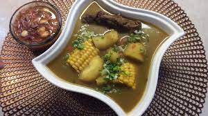

Description
is a food originally from Ecuador
the dish is a soup and have meet, yucca and vegetables
Ingredients
- 2 quarts water
- 1/2 lb beef chuck
- 2 garlic cloves, minced
- 2 tablespoons, white onions, finely chopped
- 1/4 teaspoons pepper
- teaspoon ground cumin
- 1 ounce rice
- 4 ounces peas
- 3 small ears of corn
- 1 plantain, unripe and not too large
- 4 ounces carrots, peeled and diced
- 12 ounces yucca root, peeled & cubed
- 1 stem cilantro
- 1 stem parsley, small
How to make sancocho step-by-step
- Place 2 qts water in large soup pot, with beef, onion, garlic pepper and cumin. Bring to a boil and then reduce heat to med-low. It needs to simmer for at least one hour for meat to get tender.
- Cut the corn into 2" rounds. Set aside.
- Peel the yucca and remove the fibrous string in the center. Cube & set aside.
- When the meat is tender, add rice, peas, peeled plantain in one piece, carrots and the yucca.
- When the yucca is soft, after about 20-30 minutes, add salt to taste, the last 1/2 quart water and a whole stem of cilantro and a whole stem of parsley. Cook for 5 minutes.
- Remove the parsley and cilantro stems and discard.
- Remove the meat, cut up into bite-size pieces and return to the soup.
- Remove the plantain, cut up into bite-size pieces and return to the soup.
- Mix the finely chopped onion and cilantro for garnish and sprinkle on top of the soup when served.